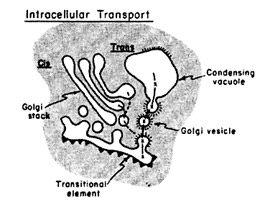
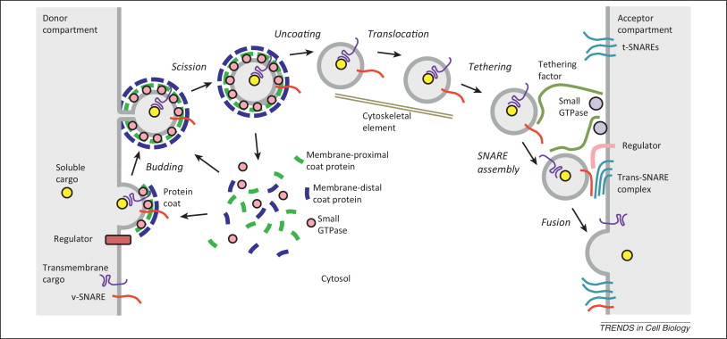
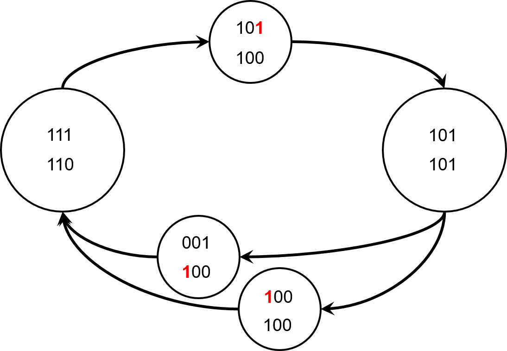
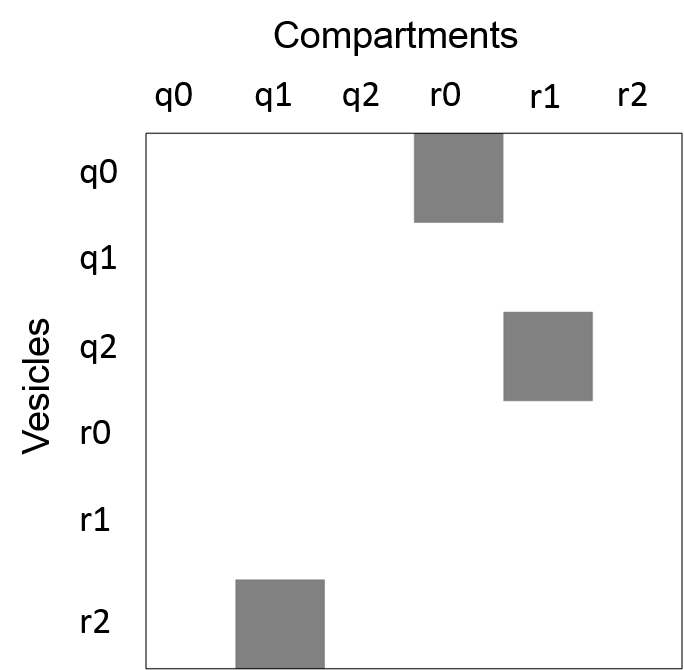
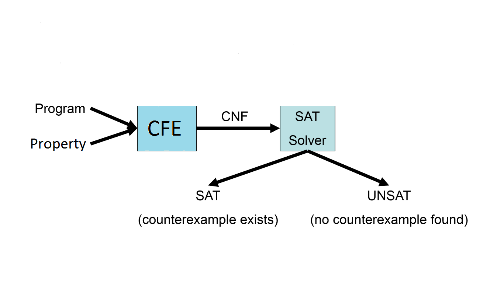
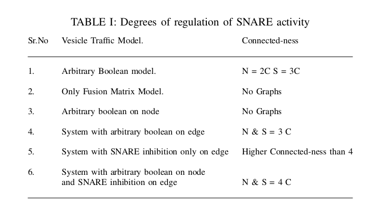

" The form of eukaryotic membrane traffic "
by Ankit Under M.Srivas & M.Thattai
I know More About Sat-Smt than the Prof's Do.
BELIEVE ME !
Biology ??? Are You serious ??
Mukund Thattai @ncbs

Mandayam.S . Somya Mani
Overall Goal :
- Provide tool support for biological systems.
- Explain why SAT works for some problems and not for others.
" Does some bilogical process works like SAT Solvers? "
How is the right cargo delivered to the right place ?
George E. Palade
The Nobel Prize in Physiology or Medicine 2013 Rothman, Schekman and Südhof
Discoveries of machinery regulating vesicle traffic.
Molecular interactions
Arf and Rab GTPases : Inhibition(Encodes Compartment Identity).
Coat proteins : Molecular loading.
SNARE proteins : Reguates FUSION of vesicle.
Regulate the movement of transport vesicles between the membrane-bound compartments of
eukaryotic cells.
What we were trying to do ?
Connect Rules to graph connectivity.N ~ Minimum Graph connnectivity required by the rules.
S ~ Every Graph with that connectivity will have a satisfying assignment.
Vesicular traffic Model
Nodes (N) represent compartments exchanging molecules M Represent a node as a bitvector 0b1101
- Directed Edge represent vesicles that are going out to fuse to another compartment.
- Two Required Condition:*
1. Cell has to be in steady State
2. Edges should respect fusion rules.
> Steady State :
for_all nodes
for_All molecules m present on edges edgel s.t edgel.source == n
there exist
an edge: edge#m(edgel.target,n)
OR
a seq (1..k) :
edge#m(edgel.target, seq(1)) &&
edge#m(seq(1), seq(2)) && ... && edge#m(seq(k),n)
edge(x,y): There is an edge between node x and node y
edge#m(x,y): There is an edge between node x and y, and molecule m is
present on that edge.
Each sequence stores a node.
Fusion Rules :
for_all edges e
# Flush the store
store = 0b0;
for_all active molecules m on edge e
# Store The corresponding molecule in
store
store = store |
Consult_Interaction-Matrix(m);
Atleast one of the corresponding molecule present
on the target node should be active*
# Makes sure that vesicle goes to the target
and not to any other node.
for_all node n != e.target
for_all m’ in store
m’ is absent or non-active at n
Fusion Rules: Two mechanism
 System with no inhibition on nodes.
Tool used CBMC
Tool used CBMC
Necessary condition :
# C1 : Steady state condition.
# C2,C3 : Fusion rules.
# C4 : Graph is four connected.
# G : Graph, f : Boolean Function
# There exists a 4 connected graph for eRSS model
SAT ( C1 && C2(f) && C3(f) && C4(G))
# C1 : Steady state condition.
# C2,C3 : Fusion rules.
# C34’ : Graph is 3-connected but not four connected.
# G : Graph, f : Boolean Function
# There exists a 3-connected graph that satisfies eRSS rules
SAT (C1 && C2(f) && C3(f) && C34’(G))
Sufficient Condition :
# C1 : Steady state condition.
# C2,C3 : Fusion rules.
# C4 : Graph is 4-connected.
# G : Graph, f : Boolean Function
Valid (for_all G : ((C4(G)) -> there-exists f : (!(C1 && C2(f) && C3(f)))))
Results ...
Scaling and Challenges.
N > 8

Then deal me in ..
Sat Solver Apocalypse !
...
Post-processing
Solving with MiniSAT 2.2.1 with simplifier
25728906 variables, 102984038 clauses
...-
(i) Decrease formula size and number of clauses.
(ii) Avoid Variable coupling.
Srivas Suggestions...
- Scale and Size :
Use of more advanced methods, such as word-level SMT solvers and semi-automatic inductive techniques for analyzing systems of arbitrary sizes.
- Quantifier Alternation :
Impact using advanced techniques for quantifier elimination in SAT solvers and model-checkers for applications such as ours.
Thank You !